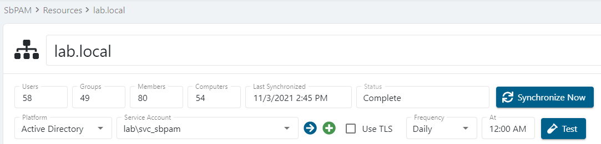

Summary
Recently created Active Directory (AD) users, groups, or computers may not be immediately available to be added to the SbPAM console, due to the last time Active Directory was synced with SbPAM.
Instructions
Log-in to SbPAM as an admin user, and navigate to Resources. Confirm the domain the desired users and/or groups are members of has already been added (synced) to SbPAM. If the domain doesn't appear in the Resources table, then it will need to be added using the + New Domain button above the Resources table.
After confirming the domain is a resource in SbPAM, click on the domain's name in the Resources table. Confirm the Last Synchronized date and time. If it is not recent, then click Synchronize Now to immediately run a domain sync.

Upon successful domain sync, the Last Synchronized field for the domain will update. All users, groups, and computers in the domain will now be available to be onboarded to SbPAM.